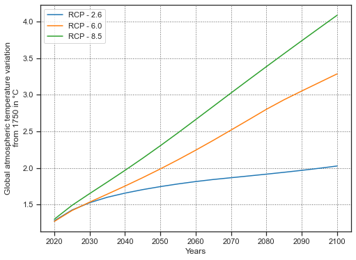

Usage
Here, we present the standard usage of the model.
First we will present the Simple Climate Model usage and next the basic routine to create a game.
Simple Climate Model usage
As seen previously, the Simple Climate Model (SCM) is composed of 3 part. The Carbon Cycle (CC), the Radiative Forcing (RF) equation and the Temperature Dynamique (TD). We will present them in this order.
Carbon Cycle
The standard way to modelize the carbon cycle is to call a Carbon Cycle class.
[1]:
from models.geophysic_models.carbon_cycle_models import *
# Choose of the Carbon Cycle
carbon_cycle = Carbon_JOOS()
print('Model\'s name:', carbon_cycle.name)
print('Initial state:' , carbon_cycle.initial_state)
print('Transition Matrix:\n', carbon_cycle.Ac)
print()
# Given a state and emission per years
state=carbon_cycle.initial_state
emission = 50
print('Initial Gt of carbon in the atmosphere:', carbon_cycle.atmospheric_carbon(state))
print('Gt of carbon in the atmosphere after five years for emission of {} Gt CO2 per years:'.format(emission), carbon_cycle.five_years_atmospheric_carbon(emission, state))
Model's name: Joos-et-al
Initial state: [139.1 90.2 29.2 4.2]
Transition Matrix:
[[1. 0. 0. 0. ]
[0. 0.9975 0. 0. ]
[0. 0. 0.973 0. ]
[0. 0. 0. 0.7927]]
Initial Gt of carbon in the atmosphere: 854.8399999999999
Gt of carbon in the atmosphere after five years for emission of 50 Gt CO2 per years: 907.0553351921237
Radiative Forcing
[2]:
from models.geophysic_models.radiative_forcing import radiative_forcing_function
Gt_carbon_in_atmosphere = 900
print('Radiative Forcing for {} Gt of carbon in atmosphere:'.format(Gt_carbon_in_atmosphere),radiative_forcing_function(Gt_carbon_in_atmosphere))
Radiative Forcing for 900 Gt of carbon in atmosphere: 2.2347507457569393
Temperature Dynamic
[3]:
from models.geophysic_models.temperature_dynamic_model import *
# Choose of the temperature dynamic
temperature_dynamic = Temp_Discret_Geoffroy()
print('Model\'s name:', temperature_dynamic.name)
print('Initial state:' , temperature_dynamic.initial_state)
print('Transition Matrix:\n', temperature_dynamic.At)
print()
# Given a state and emission per years
state=temperature_dynamic.initial_state
radiative_forcing = 3
print('Initial globale atmospheric temperature varitation from 1750:', temperature_dynamic.atmospheric_temperature(state))
print('Global atmospheric temperature variation from 1750 after five years for a radiative forcing of {} W.m² per years:'.format(radiative_forcing), temperature_dynamic.five_years_atmospheric_temperature(radiative_forcing, state))
Model's name: Geoffroy-et-al.
Initial state: [1.01 0.0068]
Transition Matrix:
[[0.72191781 0.1 ]
[0.00688679 1.00688679]]
Initial globale atmospheric temperature varitation from 1750: 1.01
Global atmospheric temperature variation from 1750 after five years for a radiative forcing of 3 W.m² per years: 1.3883017700459135
Simple Climate Model
[4]:
from models.geophysic_models.climate_model import Simple_Climate_Model
scm = Simple_Climate_Model(carbon_cycle, temperature_dynamic)
print('Initial atmospheric Gt of carbon of the SCM:',scm.atmospheric_carbon)
print('Initial atmospheric temperature of the SCM:',scm.atmospheric_temp)
print()
emission = 50
# If we want only the temperature without remebering it after
print('Global atmospheric temperature variation from 1750 after five years for emission of {} Gt CO2 per years:'.format(emission),
scm.five_years_atmospheric_temp(emission, exogeneous_emission=0, exogeneous_radiative_forcing=0))
print('Atmospheric temperature of the SCM:', scm.atmospheric_temp)
# If we want remebering it after
# 5 years
scm.five_years_cycle_deep(emission, exogeneous_emission=0, exogeneous_radiative_forcing=0)
print('Global atmospheric temperature variation from 1750 after five years for emission of {} Gt CO2 per years:'.format(emission),
scm.atmospheric_temp)
# 5 + 5 = 10 years
scm.five_years_cycle_deep(emission, exogeneous_emission=0, exogeneous_radiative_forcing=0)
print('Global atmospheric temperature variation from 1750 after ten years for emission of {} Gt CO2 per years:'.format(emission),
scm.atmospheric_temp)
Initial atmospheric Gt of carbon of the SCM: 854.8399999999999
Initial atmospheric temperature of the SCM: 1.01
Global atmospheric temperature variation from 1750 after five years for emission of 50 Gt CO2 per years: 1.1154548887208628
Atmospheric temperature of the SCM: 1.01
Global atmospheric temperature variation from 1750 after five years for emission of 50 Gt CO2 per years: 1.1154548887208628
Global atmospheric temperature variation from 1750 after ten years for emission of 50 Gt CO2 per years: 1.2487777794650823
[5]:
import pandas as pd
# Take the RCP 8.5 as Gt of Carbon per years
data = pd.read_csv('data/rcp_data.csv')
YEARS = data.keys()[8:].to_numpy(int)
RCP_26 = data.loc[data['Scenario'] == 'RCP-2.6'].to_numpy()[0][8:] * (1/co2_to_C)
RCP_60 = data.loc[data['Scenario'] == 'RCP-6.0'].to_numpy()[0][8:] * (1/co2_to_C)
RCP_85 = data.loc[data['Scenario'] == 'RCP-8.5'].to_numpy()[0][8:] * (1/co2_to_C)
scm = Simple_Climate_Model(carbon_cycle, temperature_dynamic)
temp_RCP85 = []
for emission in RCP_85:
scm.five_years_cycle_deep(emission)
temp_RCP85.append(scm.atmospheric_temp)
# We reset the SCM between two scenario
scm.reset()
temp_RCP26 = []
for emission in RCP_26:
scm.five_years_cycle_deep(emission)
temp_RCP26.append(scm.atmospheric_temp)
scm.reset()
temp_RCP60 = []
for emission in RCP_60:
scm.five_years_cycle_deep(emission)
temp_RCP60.append(scm.atmospheric_temp)
import matplotlib.pyplot as plt
import seaborn as sns
sns.set_style('ticks', {"axes.grid" : "True", "grid.color": ".4", "grid.linestyle": ":"})
sns.set_context("notebook")
plt.figure(figsize=(8,6))
plt.plot(YEARS, temp_RCP26, label='RCP - 2.6')
plt.plot(YEARS, temp_RCP60, label='RCP - 6.0')
plt.plot(YEARS, temp_RCP85, label='RCP - 8.5')
plt.xlabel('Years')
plt.ylabel('Global atmospheric temperature variation\n from 1750 in °C')
plt.legend()
plt.show()
